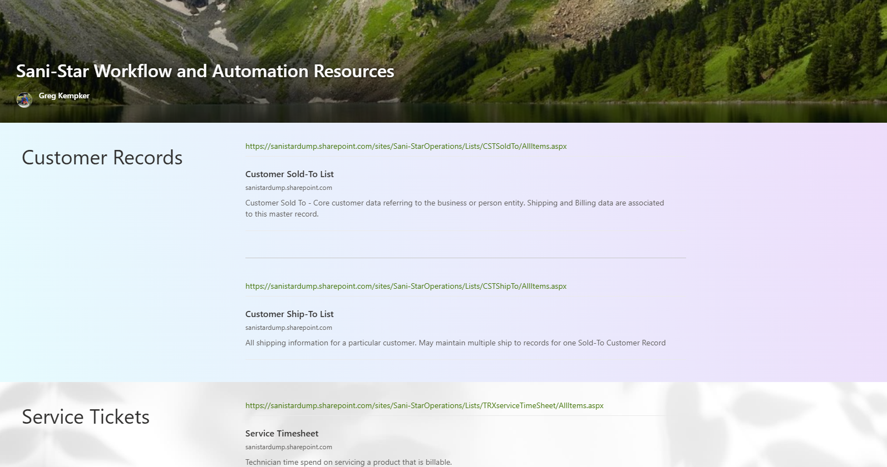

6
Automation
3
Master Data Lists
TOC - Master Data Lists
- Ths is where the system storesd its context. Like our awareness of our environment.
- To make them easier to work on, I brought them up to a table of contents, or list
Types of Lists
- Master Data - Foundational, does not frequently change
- Transactional - Records of business events and activities
- Configuration - Settings and preferences that control system behavior

TOC for Master Data Lists
Convenient way to get access to the lists and data you need to work on.
Section Prerequisites
- Access to CL03 machine
- Your Partner Portal credentials
- Access to your business email
- Modern web browser
Before You Begin
Important information about this section...
-
Access Demo PortalCL03
Step instructions...

Helpful tip about this step...
Verification Checklist
- Successfully logged into portal
- Created organization
- Received credentials email
×